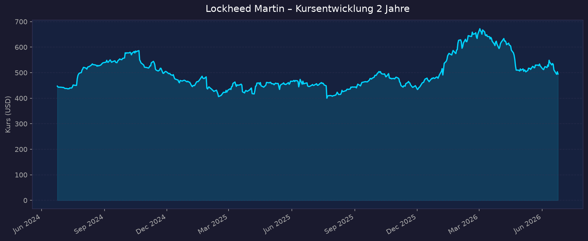
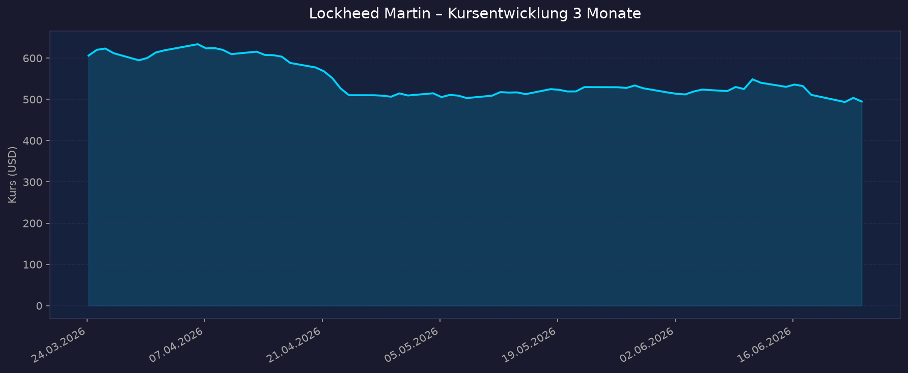

Weltraum-Einordnung: Indirekter Weltraum-Play. Lockheed Martin ist der weltgrößte Rüstungskonzern mit einem profitablen, dividendenstarken Geschäft. Das Segment Lockheed Martin Space (~13 Mrd. USD Umsatz 2025, rund 17 % des Konzernumsatzes) baut Satelliten (GPS III/IIIF), die Orion-Raumkapsel für NASAs Artemis-Programm, strategische Raketenabwehr (Next Generation Interceptor) und Trägersysteme. Kein defizitärer Pure-Play — volle KGV-/Dividenden-Analyse möglich.
📈 1. Kursentwicklung
Aktueller Kurs: 494,85 USD | Veränderung heute: gemischt — Stock zuletzt unter Druck (-6 % in 2 Tagen)
Chart – 2 Jahre

Chart – 3 Monate

| Zeitraum | Kurs Start | Kurs Ende | Veränderung |
|---|---|---|---|
| 2 Jahre | 447,33 USD (24.06.2024) | 494,85 USD | +10,6 % |
| 3 Monate | 606,20 USD (24.03.2026) | 494,85 USD | −18,4 % |
| 52-Wochen-Hoch | — | ~672 USD (Anfang 2026, in Spitzen bis ~692 USD gemeldet) | — |
| 52-Wochen-Tief | — | ~400 USD | — |
Einordnung: Die Aktie hat von ihrem 2026er-Hoch (~672–692 USD) rund 25 % verloren. Auslöser: F-35-Modernisierungskosten (rund 6 Mrd. USD zusätzliche Aufwände gemeldet), schwacher Q1-2026-Cashflow, ein gekürzter F-35-Beschaffungsantrag sowie zuletzt geopolitische Entspannung (Iran-Interimsdeal) als Belastung für den gesamten Defense-Sektor. Trotz Rücksetzer steht die Aktie auf 2-Jahres-Sicht leicht im Plus.
🔗 Interaktiv: TradingView NYSE:LMT
💹 2. KGV-Entwicklung (Kurs-Gewinn-Verhältnis)
Aktuelles KGV: ~24,4 (TTM)
| Zeitraum | KGV | Einordnung |
|---|---|---|
| Aktuell (Jun 2026) | ~24,4 | leicht über 3-/5-Jahres-Schnitt (~20–21) |
| vor 3 Monaten | ~26 (Mai 2026) | erhöht durch gedrückte TTM-Gewinne |
| vor ~7 Monaten (Nov 2025) | ~15,8 | deutlich günstiger (Tief nach F-35-Belastung) |
| Ende 2025 | ~22,5 | — |
| Ende 2024 | ~21,8 | — |
| Ende 2023 | ~16,5 | — |
Forward-KGV: ~19,0 (auf Basis der 2026er-EPS-Guidance von 29,35–30,25 USD bei Kurs ~495 USD ergibt sich sogar ein Forward-KGV von rund 16–17).
Bewertung: Das TTM-KGV von ~24 wirkt optisch über dem historischen Schnitt, ist aber durch die F-35-bedingt gedrückten Gewinne der letzten 12 Monate verzerrt. Auf Basis der bereinigten 2026er-Guidance liegt das Forward-KGV bei nur ~16–17 — historisch günstig. Damit ist die Aktie nach Forward-Maßstab eher attraktiv bewertet, sofern die Guidance hält.
💰 3. Sales Multiple (Kurs-Umsatz-Verhältnis / P/S)
Aktuelles P/S-Verhältnis: ~1,53–1,55
| Zeitraum | P/S Ratio | Einordnung |
|---|---|---|
| Aktuell (Jun 2026) | ~1,55 | im unteren Bereich der eigenen Historie |
| Ende 2025 | ~1,48 | — |
| Ende 2024 | ~1,60 | — |
| Ende 2023 | ~1,62 | — |
| Ende 2022 | ~1,87 | historisch hoch |
Trend: Stabil bis leicht fallend. Für einen Rüstungs-/Aerospace-Konzern ist ein P/S um 1,5 typisch und im Vergleich zur eigenen Historie eher am unteren Rand. Anders als bei defizitären Weltraum-Pure-Plays (P/S oft >10) spiegelt der niedrige P/S das margenstarke, aber kapitalintensive Industriegeschäft wider. Marktkapitalisierung aktuell ~114 Mrd. USD bei ~75 Mrd. USD Jahresumsatz.
📊 4. Handelsvolumen (Trading Volume)
| Zeitraum | Ø Tagesvolumen | Auffälligkeiten |
|---|---|---|
| 3-Monats-Durchschnitt | ~1,34 Mio. Aktien | — |
| 2-Jahres-Durchschnitt | ~1,45 Mio. Aktien | — |
| Volumen-Peaks (2J) | erhöht | rund um Earnings-Tage (Q1 2026 −6,3 %, Q4 2025) und den F-35-Kostenmeldungen |
Volumentrend: Leicht rückläufiges Durchschnittsvolumen, aber spürbare Spitzen an Earnings- und News-Tagen. Kein Hinweis auf abnormale Spekulation; das Volumenprofil ist typisch für einen Large-Cap-Defense-Wert.
🏦 5. Insider Trades (letzte 2 Jahre)
| Datum | Name | Funktion | Kauf/Verkauf | Anzahl Aktien | Wert (USD) |
|---|---|---|---|---|---|
| 27.02.2026 | Gregory M. Ulmer | President Aeronautics | Verkauf | ~2.840 | n/a |
| 24.02.2026 | Frank A. St. John | COO | Verkauf | ~2.410 | ~1,6 Mio. |
| Okt. 2025 | mehrere Executives | div. | Verkauf | 4.703 / 3.020 | ~491 USD/Aktie |
3-Monats-Überblick: Netto-Verkäufe — über die letzten ~90 Tage rund 6,66 Mio. USD Netto-Insiderverkäufe, keine Käufe. Das fällt mit dem Kursrückgang von ~20 % im selben Zeitraum zusammen. 2-Jahres-Überblick: Überwiegend planmäßige Verkäufe von Führungskräften (typisch für RSU-/Vergütungsausübung). Keine signifikanten Insiderkäufe — kein klares Vertrauenssignal aus dem Management, aber auch kein außergewöhnliches Verkaufsmuster für einen Großkonzern.
Quelle: SEC Edgar / OpenInsider / MarketBeat / Benzinga
🩳 6. Short-Positionen
Aktuelle Short Quote: ~1,15 % des Streubesitzes (Float), Stand 29.05.2026 (~2,65 Mio. Aktien short)
| Zeitraum | Short Interest | Veränderung |
|---|---|---|
| Aktuell (Ende Mai 2026) | ~1,15 % (~2,65 Mio. Aktien) | +3,7 % ggü. Vorperiode |
| Mitte Mai 2026 | ~1,1 % (~2,55 Mio. Aktien) | — |
| Spanne letzte 12 Monate | ~1,7–3,3 Mio. Aktien | — |
| Peak (Feb. 2025) | ~1,5 % (~3,4 Mio. Aktien) | Höchststand |
Einschätzung: Niedrig. Days-to-Cover ~2,0. Die Short-Quote von rund 1 % des Floats ist für einen defensiven Large-Cap sehr gering — kein Short-Squeeze-Potenzial, keine ausgeprägte Skepsis der Leerverkäufer. Anders als bei spekulativen Weltraum-Pure-Plays (oft zweistellige Short-Quoten) ist LMT hier unauffällig.
🗞️ 7. Aktuelle Nachrichten
| Datum | Quelle | Nachricht | Relevanz |
|---|---|---|---|
| 23.06.2026 | Motley Fool | Aktie −6 % in zwei Tagen; Iran-Interimsdeal dämpft Defense-Sektor breit | Hoch |
| 15.06.2026 | Lockheed Martin | Space Force vergibt 514 Mio. USD für GPS IIIF SV23 & SV24 (Gesamtzusage nun 14 Spacecraft) | Hoch |
| Juni 2026 | TIKR/Morningstar | Aktie ~25 % unter 2026er-Hoch — Diskussion ob „Dip" kaufbar | Hoch |
| 21.04.2026 | Lockheed Martin | Start von GPS III SV10 (letzter GPS-III-Satellit) mit optischem Crosslink-Demo-Payload | Hoch |
| ~April 2026 | Lockheed Martin | Q1 2026: EPS 6,44 USD & Umsatz 18,0 Mrd. USD verfehlen Erwartung; Free Cashflow negativ (−291 Mio.) | Hoch |
| 2026 | div. | ~6 Mrd. USD zusätzliche F-35-Modernisierungskosten belasten Margenausblick | Hoch |
| 2026 | div. | F-35-EW-Upgrade-Vertrag (~991 Mio. USD) gewonnen | Mittel |
| Jan. 2026 | Lockheed Martin | Orion meistert Artemis-II-Mission (Crew + sicheres Wiedereintauchen) | Mittel |
| 2026 | div. | LMT als Kernauftragnehmer im 185-Mrd.-USD-Programm „Golden Dome" (Raketenabwehr) positioniert | Hoch |
| Q1 2026 | div. | Rekord-Auftragsbestand ~186–194 Mrd. USD (~2,5× Jahresumsatz) | Hoch |
Sentiment: Gemischt bis leicht negativ kurzfristig, konstruktiv langfristig. Belastend: F-35-Kostenüberschreitungen, schwacher Q1-Cashflow, geopolitische Entspannung. Stützend: Rekord-Backlog, GPS-IIIF- und Golden-Dome-Aufträge, steigendes US-Verteidigungsbudget. Analysten-Konsens „Hold" mit 12-Monats-Kursziel im Schnitt ~625 USD (Spanne ~511–770 USD), also klarer Aufwärtspuffer gegenüber dem aktuellen Kurs.
📋 8. Letzte 3 Quartalsberichte
Q1 2026
| Kennzahl | Ist | Erwartung | Abweichung |
|---|---|---|---|
| Umsatz (Revenue) | 18,0 Mrd. USD | ~18,4 Mrd. USD | −2,2 % |
| EPS (verwässert) | 6,44 USD | ~6,77 USD | −0,33 USD |
| Nettogewinn | 1,5 Mrd. USD (−13 % YoY) | — | — |
| Free Cashflow | −291 Mio. USD | — | (Vorjahr: +955 Mio.) |
Segmente: Missiles and Fire Control +8 %, Space +7 %, Aeronautics −1 %, Rotary & Mission Systems −8 %. Guidance: 2026 bestätigt — Umsatz 77,5–80,0 Mrd. USD, verwässertes EPS 29,35–30,25 USD. Kursreaktion: ~−6,3 % am Earnings-Tag (Verfehlung bei Umsatz, EPS und Cashflow).
Q4 2025
| Kennzahl | Ist | Erwartung | Abweichung |
|---|---|---|---|
| Umsatz (Revenue) | 20,3 Mrd. USD (+9 % YoY) | ~19,85 Mrd. USD | +2,3 % |
| EPS | 5,80 USD | ~5,75 USD | +0,05 USD |
| Segment-Operating-Profit | 2,1 Mrd. USD | — | — |
| Free Cashflow | 2,8 Mrd. USD | — | stark |
Gesamtjahr 2025: Umsatz 75 Mrd. USD (+6 %), EPS 21,49 USD (−4 % YoY, durch Belastungen), Free Cashflow 6,9 Mrd. USD, Rekord-Backlog 194 Mrd. USD. Guidance: Erstmalige 2026er-Guidance (77,5–80,0 Mrd. USD Umsatz; 29,35–30,25 USD EPS). Kursreaktion: Aktie stieg nach den Zahlen (EPS-Beat, starker Cashflow).
Q3 2025
| Kennzahl | Ist | Erwartung | Abweichung |
|---|---|---|---|
| Umsatz (Revenue) | 18,6 Mrd. USD (vs. 17,1 Mrd. Vj.) | — | über Erwartung |
| EPS | 6,95 USD | ~6,39 USD | +0,56 USD (+8,8 %) |
| Nettogewinn | 1,6 Mrd. USD | — | — |
| Free Cashflow | nicht separat verfügbar | — | — |
Guidance: Ausblick für 2025 angehoben (Umsatz, Segment-Operating-Profit und EPS). Kursreaktion: trotz Beat ~−2,7 % vorbörslich (~495 USD) — Markt hatte mehr erwartet.
🌍 9. Marktkontext & Wettbewerb
Markt / Branche: Aerospace & Defense (US-Sektor: >1,7 Bio. USD Marktkap., ~542 Mrd. USD Umsatz, 78+ gelistete Werte). US-Verteidigungsbudget FY2026 rund 1,08 Bio. USD; FY2027-Vorschlag bis ~1,5 Bio. USD (+39 %). Innerhalb davon ist der Weltraum-/Satellitenmarkt einer der am schnellsten wachsenden Teilbereiche (militärische Satellitenkonstellationen, Raketenabwehr aus dem Weltraum, ziviles NASA-Geschäft).
| Wettbewerber | Stärke | Schwäche |
|---|---|---|
| RTX (Raytheon) | Rekord-Backlog (~251 Mrd.), starke Missile-Nachfrage, +13 % organisches Wachstum | komplexes Mischportfolio, weniger Space-fokussiert |
| Northrop Grumman | B-21-Bomber, Sentinel-ICBM, starke Space-/Surveillance-Sparte | Festpreis-Risiken bei Großprogrammen |
| Boeing | wichtiger Regierungslieferant, Defense-/Space-Sparte | anhaltende Probleme im Zivilgeschäft |
| SpaceX (Ticker SPCX seit 12.06.2026, ~1,75 Bio. USD Bewertung) | dominante Trägerraketen, Starlink, Kostenführerschaft | Konkurrenz zu LMTs Träger-/Satellitengeschäft |
Branchentrends:
- Steigende Verteidigungsbudgets (USA + NATO/Europa) als struktureller Rückenwind.
- „Golden Dome" (185 Mrd. USD Raketenabwehr) mit LMT als Kernauftragnehmer — wesentlicher Space-Katalysator.
- SpaceX-Börsengang (12.06.2026) hat den Weltraum-Sektor 2026 befeuert, erhöht aber den Wettbewerbsdruck auf klassische Trägersysteme; LMTs Space-Geschäft ist stärker auf staatliche Satelliten/Raketenabwehr/Orion fokussiert und dadurch weniger direkt von SpaceX bedroht.
Marktposition: Führend. Weltgrößter Rüstungskonzern, dominanter Anbieter bei Kampfjets (F-35), Raketenabwehr und militärischen Satelliten (GPS III/IIIF). Lockheed Martin Space wuchs 2025 um 4 % auf ~13 Mrd. USD, getrieben von Next Generation Interceptor, Fleet Ballistic Missile und Orion.
Risiken aus dem Marktumfeld: Festpreis-Entwicklungsverträge (F-35-Modernisierung: ~6 Mrd. USD Mehrkosten) belasten Margen; Abhängigkeit vom US-Budgetzyklus und politischen Prioritäten; geopolitische Entspannung (z. B. Iran-Deal) drückt Defense-Multiples kurzfristig; im Weltraum-Trägergeschäft strukturelle Konkurrenz durch SpaceX.
🧮 Bewertungs-Score
| Kriterium | Score (1–10) | Begründung |
|---|---|---|
| Bewertung | 8 | TTM-KGV ~24 optisch hoch, aber Forward-KGV nur ~16–17 und P/S ~1,5 am unteren Rand der Historie — nach Rücksetzer attraktiv |
| Wachstum & Momentum | 5 | Solides ~5–6 % Umsatzwachstum & Rekord-Backlog (194 Mrd.), aber Kursmomentum klar negativ (−25 % vom Hoch), Q1-2026-Miss |
| Bilanz & Sicherheit | 6 | Profitabel, ~6,9 Mrd. FCF 2025, aber Q1-2026 negativer FCF und spürbare Verschuldung; F-35-Kostenrisiken belasten |
| Qualität & Wettbewerbsposition | 9 | Weltgrößter Defense-Konzern, technologischer Vorsprung (F-35, GPS IIIF, Orion, NGI), 2,5× Backlog-Deckung, Burggraben |
| Chancen vs. Risiken | 7 | Katalysatoren (Golden Dome, steigende Budgets, GPS IIIF, Analystenziel ~625 USD) überwiegen die Risiken (F-35-Margen, Geopolitik) |
Gewichteter Gesamtscore: 7,0 / 10 (Gewichtung: Bewertung 25 %, Wachstum/Momentum 20 %, Bilanz 20 %, Qualität 20 %, Chancen/Risiken 15 % → 8·0,25 + 5·0,20 + 6·0,20 + 9·0,20 + 7·0,15 = 7,05)
5-Jahres-Szenario
Annahmen: aktueller Kurs ~495 USD, Dividende ~13,80–14 USD/Jahr (~2,8 % Rendite, 24 Jahre Steigerung in Folge). Zeithorizont bis 2031.
| Szenario | Annahmen | Kursziel 2031 | Kursrendite | + Dividenden (~5J) | Gesamtrendite |
|---|---|---|---|---|---|
| Bär | F-35-Margen erodieren weiter, Budgetkürzungen, EPS stagniert, Multiple-Kompression | ~430 USD | −13 % | +~15 % | ~+2 % p.a. nahe 0 |
| Base | ~5 % EPS-Wachstum p.a., Golden Dome/GPS IIIF liefern, Forward-KGV ~17 normalisiert | ~640 USD | +29 % | +~15 % | ~+44 % (~7,6 % p.a.) |
| Bull | Budget-Hochlauf (FY27 +39 %), Golden-Dome-Skalierung, Margen erholen sich, Re-Rating auf ~20 KGV | ~820 USD | +66 % | +~16 % | ~+82 % (~12,7 % p.a.) |
Die starke Dividende (24 Jahre Steigerung in Folge) stützt die Gesamtrendite in allen Szenarien und begrenzt das Abwärtsrisiko.
📝 Gesamteinschätzung
Stärken:
- Weltgrößter Rüstungskonzern mit breitem Burggraben (F-35, Raketenabwehr, militärische Satelliten)
- Rekord-Auftragsbestand ~194 Mrd. USD (~2,5× Jahresumsatz) → hohe Umsatzsichtbarkeit
- Indirekter Weltraum-Play mit echtem Space-Geschäft: ~13 Mrd. USD Space-Umsatz (GPS IIIF, Orion/Artemis, Next Generation Interceptor, Golden Dome)
- Dividendenaristokrat (24 Jahre Steigerung in Folge, ~2,8 % Rendite), attraktives Forward-KGV ~16–17 nach Rücksetzer
- Strukturell steigende Verteidigungsbudgets (FY27-Vorschlag +39 %)
Risiken:
- F-35-Modernisierung: ~6 Mrd. USD Mehrkosten belasten Margen und Cashflow (Q1 2026 FCF negativ)
- Negatives Kursmomentum (−25 % vom 2026er-Hoch), Q1-2026-Earnings-Miss
- Abhängigkeit vom US-Budgetzyklus; geopolitische Entspannung (Iran-Deal) drückt Defense-Multiples
- Netto-Insiderverkäufe der letzten 90 Tage, keine Käufe
- Wettbewerbsdruck im Trägergeschäft durch SpaceX (Börsengang 12.06.2026)
Fazit: Lockheed Martin ist ein qualitativ hochwertiger, profitabler indirekter Weltraum-Play mit echtem Space-Standbein, der nach einem ~25-%-Rücksetzer auf Forward-Basis (KGV ~16–17, P/S ~1,5) wieder günstig bewertet ist. Kurzfristig belasten F-35-Kosten, schwacher Cashflow und geopolitische Entspannung; langfristig stützen Rekord-Backlog, steigende Budgets und Katalysatoren wie Golden Dome und GPS IIIF. Bewertungs-Score 7,0/10, Analysten-Konsens „Hold" mit Kursziel ~625 USD (klarer Aufwärtspuffer). Dividendenstärke begrenzt das Abwärtsrisiko.
Datenquellen: Yahoo Finance · stockanalysis.com · Macrotrends · MarketBeat · Public.com · Finviz · Fintel · SEC Edgar · OpenInsider · Benzinga · Motley Fool · Investing.com · Reuters/StockTitan · TIKR · Morningstar · Lockheed Martin IR · Satellite Today · Simply Wall St yfinance-Kursdaten lokal generiert (Charts), Stand 2026-06-24
Keine Anlageberatung — rein informative Auswertung öffentlicher Daten.